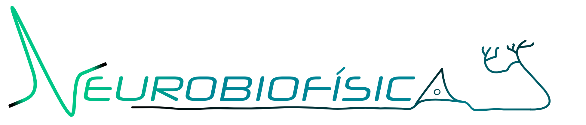

You can reach me using any of the external links at the left-bottom
of this page.
Don't hesitate to get in touch!
My current professional address:
BioCircuits Institute
University of California San Diego
9500 Gilman Dr., Mail Code 0402
La Jolla CA 92093-0402
You can also e-mail me using the following e-mail: thiago dot mosqueiro at usp dot br
Do you need PGP? Here's my public key.
Groups I've been in:
Neurobiofísica Group in IFSC:

BCI in University of California San Diego: